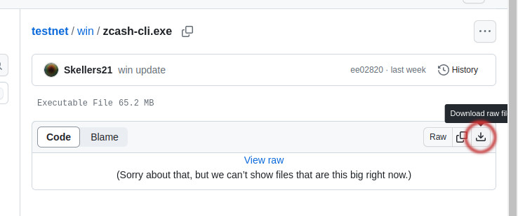
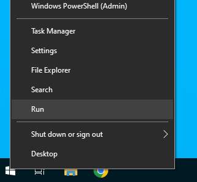
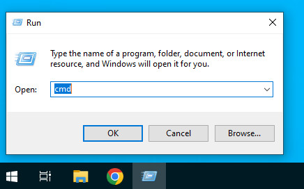
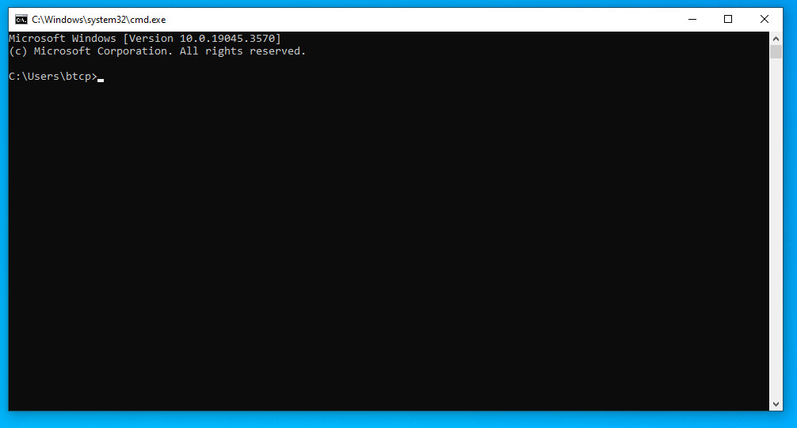
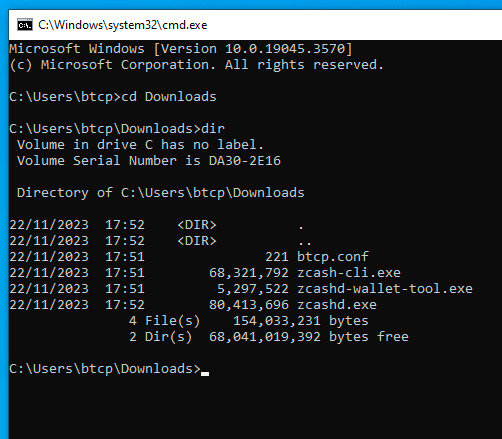
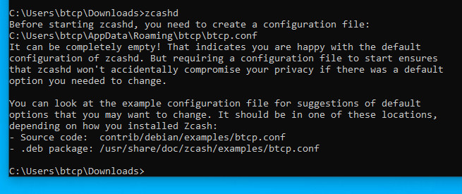
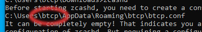
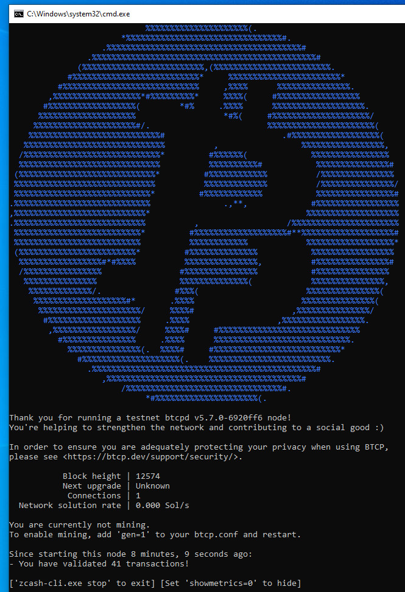
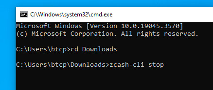

1. Download the 4 files from the win folder in GitHub by clicking on the files individually and select download raw file

2. Right click on start menu button and select Run from the context menu

3. Type cmd into the run dialog and press OK

you should see the cmd.exe window opoen up on your PC

4. In the cmd window type in
cd Downloads<RETURN>
dir<RETURN>
and you should see a list of the files you downloaded from step 1

5. In the cmd window type in
zcashd<RETURN>

note the path listed - you need to change the btcp part to your own windows account name and move over the btcp.conf file to that folder

6. use notepad to open and edit the highlighted 'btcp' in the btcp.conf file you've just moved
exportdir=C:\Users\btcp\AppData\Roaming\btcp
update the line to
exportdir=C:\Users\your account name\AppData\Roaming\btcp
7. Run zcashd as in step 5 and this time you should see the node start up
8. A popup will appear when it's first run requesting access to connect through the firewall - allow access and the node should begin to download the testnet blocks

9. To stop the node, open another cmd window, change to the Downloads directory as in step 4 and type in
zcash-cli stop<RETURN>
